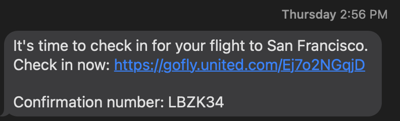
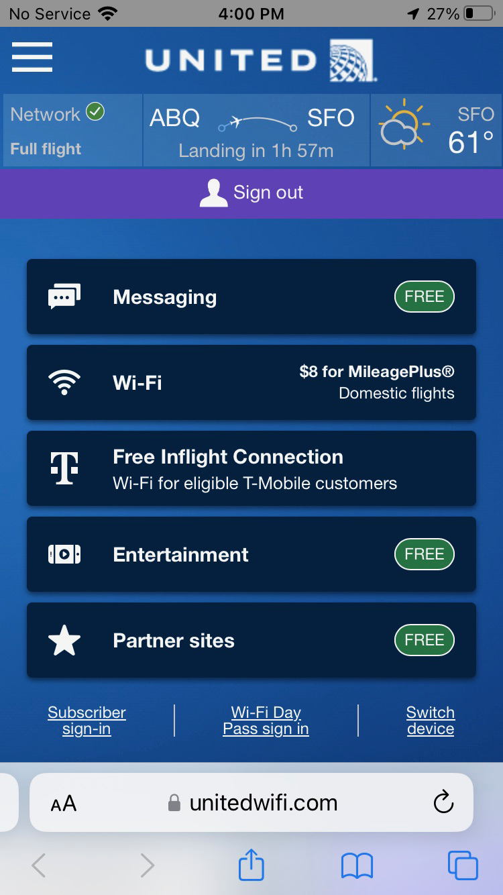
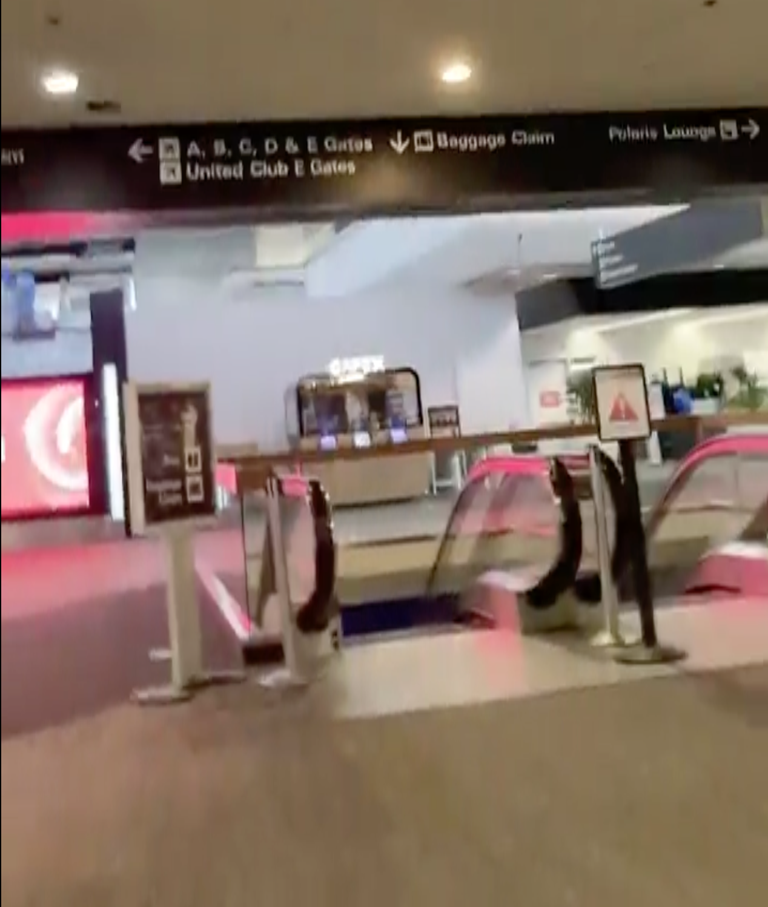

Travel checklist for Valeria
Monday, Sept 25th (the day before travel)
Check-in
Expect a text like this around 3pm to check-in:

Click the link and check in, accepting all the default choices. You will get a follow up text like this:
Once you're checked in, your boarding pass should be shown in the United App. Confirm it's there. Call me if it's not and I'll help you.
Tuesday, Sept 26th (the day of travel)
Security
Arrive at the airport around 2pm and go directly to the security line
Show the boarding pass on your phone and your driver's license to the TSA person
Take off shoes and jacket and put them in one of the big tubs. Remove everything from your pockets and put them into the tub as well. Put luggage and tub onto conveyer belt.
Walk through the x-ray machine (turn, lift your arms, etc., as instructed by the TSA staff)
Collect your things from the conveyer belt and put everything back where it came from
Walk out of security, and you will see a tall blue wall with a bronze statue of a man and eagle. When you get to it, turn left and you will see a sign for gate A1. Walk towards it.
Double check the gate signs to make sure it's United Airlines flight number 270 leaving for San Francisco at 3:40pm:
Boarding
When they announce boarding for "Group 1" or "First Class" passengers you can board. It will be just after travelers with children, people who need extra help boarding, and active military service members, but before everyone else.
Board the plane. You're in seat 3F, which is the window seat to your left in the third row from the front.
Put your carry-on luggage in the overhead bin. Don't be shy to ask for help from the flight attendants if you need it.
On The Plane
Wi-Fi
I already bought you a Wi-Fi pass for the flights. To connect your phone:
Wait at least 5 minutes after the plane has taken off, then use your phone to connect to the Wi-Fi network called "unitedwifi.com"
Use your phone's browser to visit the website at
https://www.unitedwifi.com
You should see a purple sign-in button. Sign in using the frequent flyer number and password you set up on your United Airlines app. Your Wi-Fi pass is connected to your frequent flyer account.
You should see a screen like this that shows you have a "Network" for the "Full Flight" and can now use Wi-Fi on your phone:

Landed
Finding me
After you land, get your stuff and exit the airplane.
Once you're off the plane, You need to walk to Baggage Claim to meet me. I don't know yet what gate you will arrive at yet until the day of travel so I don't know which way you will go. Once I know the arrival gate, I will update this to give you exact instructions. Most passengers will head that way. You can ask anybody for help or call me. There may be several moving walkways and areas with shops along the way but there should be signs for Baggage Claim everywhere. Here's how the walk looked for me:
You will reach an escalator that goes DOWN to Baggage Claim and I will meet you down there at the bottom of the escalator.
